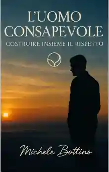

Saggistica
L’Uomo Consapevole: Costruire Insieme il Rispetto: Un Percorso di Crescita per l’Equilibrio di Genere

Presentazione dell’opera
Il saggio propone un percorso di riflessione sul significato dell’identità maschile nella società contemporanea, esaminando il peso degli stereotipi, delle aspettative sociali e dei modelli rigidi di comportamento. Invita a riconoscere e gestire le emozioni, a superare le difficoltà della comunicazione e a costruire relazioni fondate su ascolto, empatia e rispetto reciproco. L’obiettivo dichiarato è favorire una crescita personale che contribuisca all’equilibrio e alla comprensione fra i generi.
Edizioni e identificativi
Formato segnalato nello Store Amazon: Kindle
ASIN Kindle: B0FDBL9XGT
Pubblicazione: 15 giugno 2025 · Lingua: italiano
Lunghezza equivalente: 44 pagine · Dimensione file: 1,5 MB
Screen Reader: supportato · Miglioramenti tipografici: abilitati